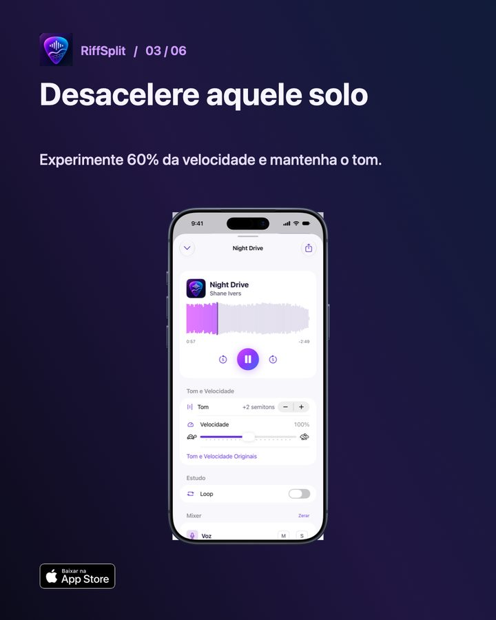

Como desacelerar um solo sem mudar o tom
Para desacelerar um solo sem mudar o tom, use um app que estica o áudio no tempo sem alterar a altura das notas. No RiffSplit você deixa a velocidade em 60% ou 70%, mantém o tom original, isola a guitarra com S e marca o trecho do solo com o loop A–B. Assim você ouve cada nota com clareza e repete só a parte difícil.

Passo a passo no RiffSplit
- Abra a música no player: Escolha a música já separada na biblioteca.
- Isole a guitarra: Toque em S na faixa Guitarra para ouvir só o solo, ou deixe guitarra e bateria para manter a referência rítmica.
- Reduza a velocidade: Em Tom e Velocidade, baixe para 60% ou 70%. O tom continua o mesmo.
- Marque o trecho: Ligue o Loop e arraste na forma de onda do começo ao fim da frase que você quer aprender.
- Suba aos poucos: Quando a frase sair limpa, suba a velocidade de 10 em 10 até chegar a 100%.
Método para tirar solos mais rápido
- Divida o solo em frases curtas de 2 a 4 compassos e trabalhe uma por vez no loop.
- Cante a frase antes de tocar: se você consegue cantar, consegue achar no braço.
- Use o metrônomo do app na velocidade reduzida para não acelerar sem perceber.
- Repare em bends e vibratos na velocidade lenta: é onde está o estilo do guitarrista.
- Volte para 100% com a banda inteira tocando para conferir o encaixe com o ritmo.
Perguntas frequentes
Qual a menor velocidade possível?
50%. A faixa vai de 50% a 150%, sem alterar o tom.
A qualidade do som cai quando desacelera?
Fica um pouco mais artificial em velocidades muito baixas, como em qualquer app. Entre 60% e 80% o som se mantém claro para estudo.
Também dá para mudar o tom?
Sim, até 12 semitons para cima ou para baixo, sem mudar a velocidade.

Outros guias
Atualizado em 08/11/2026.